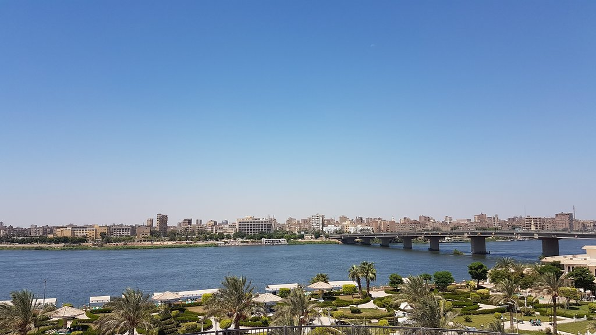
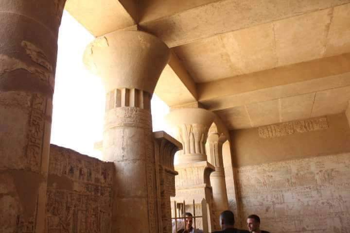
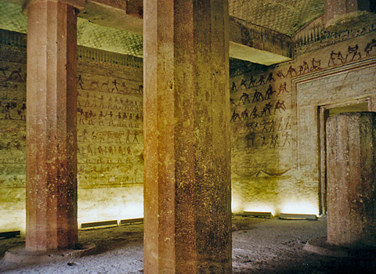

Today Al Minya is small city in Middle Egypt that does not receive much attention on the tourist map, but it was once a powerful regional capital within Egypt. During the First Intermediate Period, when the authority that ruled Egypt from Memphis during the Old kingdom broke down, Minya became a minor power center and it continued to hold sway over the center of Egypt through the Middle Kingdom. Visiting Al Minya is not a common stop on most tours. The sites are visited much less frequently and the atmosphere of the town is not geared toward foreign visitors. While the town doesn’t offer much to visitors, there are some interested colonial era buildings in the old section of town near the central midan, Tahrir Square.
Near the modern village of Tuna el-Gebel, on the edge of the Western Desert, a large site functioned as the necropolis for the ancient town of Khnum or Hermopolis. The cemetery was located 11km from the city, in an area which is perhaps better known as the north-western boundary of Akhenaten’s city of Akhetaten and is marked by a boundary stela.
Beni Hasan (also written as Bani Hasan, or also Beni-Hassan) (Arabic: بني حسن) is an Ancient Egyptian cemetery site. It is located approximately 20 kilometers (12 mi) to the south of modern-day Minya in the region known as Middle Egypt, the area between Asyut and Memphis.[1]:120 While there are some Old Kingdom burials at the site, it was primarily used during the Middle Kingdom, spanning the 21st to 17th centuries BCE (Middle Bronze Age).[2]:8 To the south of the cemetery is a temple constructed by Hatshepsut and Thutmose III, dedicated to the local goddess Pakhet.[1]:128 It is known as the Cave of Artemis, because the Greeks identified Pakhet with Artemis, and the temple is subterranean.
